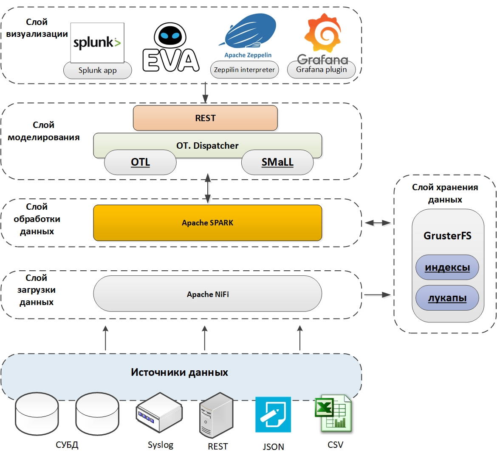

Общее описание
WDC.Платформа – это универсальная система сбора, аналитики и визуализации больших объемов машинных данных (machine-generated data), построенная на базе стека программных продуктов с открытым исходным кодом и компонентов собственной разработки. Разработчик WDC.Платформы – российская компания ISG Neuro.
Ключевой особенностью WDC.Платформы является минимальный барьер входа для пользователей системы, то есть возможность использовать самые современные технологии машинного обучения, аналитики больших данных и распределенной обработки информации с минимальными затратами на изучение этих технологий.
Функции аналитики не ограничиваются быстрыми манипуляциями с данными, но также включают в себя возможности построения моделей с использованием библиотек машинного обучения, в том числе нейросетевых, работающих на графических процессорах. В системе имеется возможность создания Объектных моделей для различных предметных областей – специализированных графовых структур для построения универсального описания сущностей конкретной предметной области. Использование Объектных моделей позволяет датасаентистам работать с уже подготовленными, хорошо формализованными данными и эффективно использовать накопленный ранее опыт анализа данных в новой предметной области.
Компоненты платформы позволяют визуализировать полученные данные как с использованием встроенных инструментов, так и с помощью практически любых внешних систем визуализации.
Компоненты WDC.Платформы
Архитектура Платформы представлена на рисунке:

Ниже описываются основные компоненты WDC.Платформы.
Визуализация
В WDC.Платформе "из коробки" реализована концепция альтернативной визуализации со встроенной поддержкой Apache Zeppelin, Splunk Search Head и собственной среды EVA.
EVA – разработанная компанией ISG Neuro интерактивная среда визуализации, уникальная в своём роде тем, что объединяет императивный и декларативный подходы к организации описания интерфейса пользователя и позволяющая реализовать сложную логику интерактивных дашбордов без программирования.
Предназназначена как для предварительного интерактивного исследования данных, так и для максимально простого построения конечных дашбордов высокого уровня сложности.
Функционально состоит из:
-
Инструмента анализа данных с возможностью экспорта результатов анализа в виде готового к применению в продуктивной среде дашборда.
-
Среды управления дашбордами.
Apache Zeppelin – популярное Open-Source решение компании Apache, предназначенное для реализации единого интерфейса визуализации данных, полученных в результате их анализа различными инструментами.
Моделирование
Функционал моделирования в WDC.Платформе предоставляется пользователю в виде двух специализированных языков обработки данных: ОТL и SMaLL.
Язык OTL
OTL – язык низкоуровневой работы с данными для организации конвейерной (по типу вызова цепочки связанных через потоки ввода-вывода утилит в unix/linux) их обработки.
Изначально разрабатывался на основе языка SPL компании Splunk и является по большинству функций обратно совместимым с ним.
Язык OTL обеспечивает крайне эффективное решение целого ряда задач обработки, прежде всего данных в виде машинно-сгенерированных журналов – логов. Основными функциями языка являются:
-
полнотекстовый поиск и фильтрация по всему содержимому сообщений;
-
выделение и поиск по выделенным полям;
-
агрегация;
-
объединение;
-
обогащение данных по внешним или внутренним источникам;
-
расчёт статистических показателей;
-
математические преобразования данных;
-
подготовка данных для отображения в конкретных видах визуализации;
-
обучение и применение моделей машинного обучения из широкого набора открытых библиотек.
Фундаментальной особенностью OTL является высокая эффективность использования возможностей распараллеливания вычислений по кластеру вычислительных ресурсов как в режиме, близком к реальному времени (near real-time), так и в режиме пакетной обработки (batch processing).
Язык SMaLL
SMaLL (Simple Machine Learning Language) – язык, расширяющий возможности OTL и позволяющий использовать все возможности WDC.Платформы без знаний в области машинного обучения или инженерии данных.
Основной идеей SMaLL является приведение решения большинства аналитических задач к трём стандартным фиксированным последовательностям конвейера команд – паттернам:
-
Паттерн обучения модели (GetData | Fit | Explain | Score | Show).
-
Паттерн применения модели (GetData | Apply | Score | Show).
-
Паттерн работы со справочниками (GetData | Eval | Put).
Данные последовательности постоянны и отличаются только указанием в качестве операндов различных профилей – выделенных областей, под которые сформированы наборы плагинов – специализированных препроцессоров данных и алгоритмов машинного обучения, специфичных для конкретной области знания.
Такой подход позволяет скрыть от конечного пользователя рутинные подробности работы с данными и сконцентрировать его усилия на достижении конечного результата.
Особенностью SMaLL является наличие обязательной команды Explain, которая интерпретирует модель машинного обучения и представляет её в понятном человеку виде, что позволяет не только понять и скорректировать получившуюся модель, но и привнести в неё знания, известные человеку, но недоступные в конкретном наборе обучающих данных.
Обработка данных
Основой вычислительных возможностей WDC.Платформы является движок Apache Spark, которые обеспечивает эффективную реализацию параллельных вычислений и быстрого доступа к информации, распределённой по различным точкам хранения.
Кроме непосредственно вычислений Apache Spark позволяет использовать и расширять возможности системы за счёт постоянно развивающегося набора библиотек машинного обучения, создаваемых участниками сообщества этого продукта.
Языки SMaLL и OTL являются надстройками над функционалом Apache Spark и обеспечивают существенное снижение барьера входа для применения возможностей этого инструмента.
Хранение данных
Основной идеей организации хранения данных в WDC.Платформе является концепция No DataBase. Данная концепция позволяет не строить систему на основе одной или нескольких специализированных под конкретные задачи БД, а реализовать её в виде эффективного распределённого Хранилища, обеспечивающего требуемый уровень производительности, надёжности и масштабируемости, поверх которого реализуется гибридная БД, основанная на расчёте всех требуемых для эффективной работы с конкретными данными индексов и агрегирующих структур. Это позволяет унаследовать достоинства всех эффективных структур хранения и минимизировать влияние их недостатков.
В текущей реализации подсистемы хранения используется распределённая файловая система GlusterFS, а в качестве оптимального формата хранения данных в гибридной БД – формат Apache Parquet.
Такой подход гарантирует возможность горизонтального масштабирования при увеличении объемов хранимых данных и высокую надёжность итоговой системы.
При возникновении необходимости обработки особенно больших объёмов исторических данных (>0.5 PB) возможна прозрачная для пользователя частичная или полная замена GlusterFS на файловую систему HDFS (Apache Hadoop).
Загрузка данных
Загрузка данных из разных источников обеспечивается средствами Apache NIFI. С помощью NIFI входящие данные проходят предварительную обработку, проводится вычисление всех требуемых для организации эффективной работы с ними индексов и агрегатов, после чего они распределяются по устройствам хранения.
Установка и сопровождение
Дистрибутив WDC.Платформы поставляется в виде виртуальной машины формата OVF. Подробно процесс установки и запуска WDC.Платформы описан в документе “WDC.ПЛАТФОРМА. Установка и запуск”.
Устанавливая WDC.Платформу, пользователь принимает лицензионное соглашение, описанное в документе “WDC.ПлатформА. Лицензионное соглашение”.
Сопровождение ПО WDC.Платформы осуществляется разработчиком – компанией ISG Neuro – в соответствии с документом “ОТ.ПЛАТФОРМА. Обеспечение жизненного цикла”.
Обновление отдельных самостоятельных компонент, входящих в состав WDC.Платформы, вне общего обновления всего дистрибутива не предполагается, так как может нарушить функционирование всего комплекта из-за возможной кастомизации этих компонент в процессе разработки.
Обновления всего дистрибутива и отдельные критические исправления распространяются только разработчиком системы. В случае самостоятельного обновления отдельных компонент конкретная инсталляция системы продолжает поддерживаться компанией-разработчиком, но по специальному SLA, не предполагающему вмешательство в изменённые пользователем части Системы.
Разработчик WDC.Платформы не имеет возможности получения скрытого удаленного доступа к инсталляциям Платформы.
Разработка и размещение приложений на базе WDC.Платформы
В WDC.Платформе предусмотрена возможность разработки законченных приложений, содержащих в одном месте описание сбора, обработки и визуализации информации. Приложения включают в себя:
-
описание уникальных для приложения источников данных и правил выделения полей из них;
-
множество поисковых запросов, используемых в приложении;
-
визуальные компоненты, дашборды, отчеты, графики, алерты, правила обогащения;
-
метаинформацию, такую как версия и название приложения, визуальный стиль, иконки, список зависимостей (иных приложений, внешних библиотек).
WDC.Платформа позволяет упаковать приложение в единый архив, который можно перенести без изменений на любую другую инсталляцию Платформы.